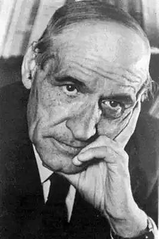
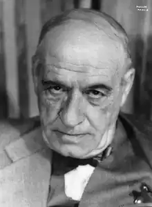

Хосе Ортега-і-Гассет (Jose Ortega y Gasset) (1883-1955) — іспанський філософ, публіцист і громадський діяч, творець раціовіталізму. Його вчення є своєрідною версією синтезу філософії життя та екзистенціалізму; впливовий представник філософії історії та теорії еліти, автор відомих досліджень з соціології, культурології, естетики, літературо— та мистецтвознавчих есе.
БІОГРАФІЯ
Народився у Мадриді, в сім'ї головного редактора газети "Ель імпарсіаль" ("Неупереджений"). Навчаючись в коледжі отців-ієзуїтів "Miraflores del Palo", Ортега бездоганно засвоїв латинь та древньогрецьку мову. У 1904-му році закінчив Мадридський університет Комплутенсе, захистивши при цьому докторські тези "El Milenario" ("Тисячолітній"). Потім сім років провів в універистетах Німеччини, віддаючи перевагу Марбургському, де в той час викладав Герман Коген. Повернувшись до Іспанії, отрмав призначення в Мадридський університет в Комплутенсе, де і викладав до 1936-го року, коли почалася громадянська війна. У 1923-му році Ортега заснував "Revista de Occidente" ("Західний журнал"), який слугував справі "зрівняння Піренеїв" — європеїзації Іспанії, тоді ізольованої від сучасного культурного процесу. Будучи переконаним республіканцем, Ортега виконував роль вождя інтелектуальної опозиції в роки диктатури Прімо де Рівери (1923-1930), відігравав значну роль у звергненні короля Альфонса XIII, був одним із засновників "Республіканського об'єднання інтелігенції" (1931), вибирався громадянським губернатором Мадриду. Саме тому йому довелося покинути країну з початком громадянської війни. Після повернення у 1948-му році в Мадрид, спільно з Хуліаном Маріасом створив Гуманітарний інститут, де викладав і сам. ТВОРЧІСТЬ У 1914-му році Ортега опублікував свою першу книгу "Роздуми про Дон-Кіхота" (Meditationes del Quijote) і прочитав знамениту лекцію "Стара та нова політика" (Vieja y nueva politica), в якій виклав точку зору молодих інтелектуалів того часу щодо політичних і моральних проблем Іспанії. Деякі історики вважають це звернення важливим кроком у ланцюжку подій, які призвели до падіння монархії. Твори Ортеги, такі як "Роздуми про Дон-Кіхота" і "Безхребетна Іспанія", відображають думки автора як іспанця та європейця. Його інтелектуальні здібності і художній талант очевидні в таких роботах, як "Тема нашого часу" (1923) і "Дегуманізація мистецтва" (1925). В пролозі до "Роздумів про Дон-Кіхота" можна знайти головні ідеї філософії Ортеги. Тут він дає визначення людини: "Я — є я і моє оточення" ("Yo soy yo y mi circunstancia"), тобто людина не може розглядатися окремо від оточення та обставин історії. Міжнародна відомість прийшла до Ортеги в 1930-их роках, коли з'явилася його праця "Бунт мас" ("Rebelión de las Masas"). Метафізика Ортеги, яку він сам називає раціональним віталізмом, набуває чітких рис уже в праці "Meditaciones del Quijote" ("Роздуми про Дон-Кіхота"), де він оголошує єдиною реальністю людське "буття-з-речами". Сам Ортега переконаний, що своєю метафізикою він на п'ятнадцять років випередив "Буття та час" Мартіна Хайдеггера. В цілому ж Ортега ставився до останнього холодно. Раціоналізм Ортеги через призму теорії пізнання народжував гносеологію "перспективізму", яка стверджувала, що "життя кожного — це точка зору на універсум" і що "єдино хибна перспектива — це та, яка вважає себе єдиною". Цікавими видаються спроби Ортеги щодо розвитку так званої "аристократичної логіки" (Ideas у creencias), а також фундаментальна для Ортеги, але незакінчена "La idea del principio en Leibniz у la evolución de la teoría deductiva", яка видається йому "логікою винаходу". ФІЛОСОФІЯ Плідну дослідницьку і викладацьку роботу Ортега поєднує з журналістською та видавничою діяльністю. Друкуючись спочатку в журналах "Ель Імпарсіяль", "Фаро", "Еспанья", "Ель-Соль", він у 1923-му році засновує свої власні — "Ревіста де Оксиденте" та "Ель Еспектадор", єдиним автором котрого був він сам; здійснює низку серійних видань перекладів найновітніших праць з філософії (у тому числі — філософії історії), економіки, соціології, психології, біології тощо. Погляди Ортеги формувалися під впливом: у молоді роки, з одного боку, — Е. Ренана, що виявилося у притаманній зрілому Ортезі романтичній, відкритій та вільній формі філософування; з іншого боку — неокантіанської школи витонченого і водночас строгого аналітичного філософського мислення; дещо пізніше, у 10-20-ті він захоплювався Гегелем, Ніцше, Бергсоном, Зіммелем, Шпенглером, Дільтеєм, Шелером, Гуссерлем; у 30-40-ві — Лейбніцем, Прустом, Тойнбі, Хейзінгою, Хайдеггером тощо. У центрі уваги Ортеги — філософсько-історичні та соціальні проблеми, посилений інтерес до котрих є, за Ортегою, відмінною рисою сучасної філософії загалом. Пропонований іспанським мислителем підхід відрізняється від властивого традиційній, класичній, філософії не тільки сферою тематизації, а й ракурсом розгляду трактованих тем. Класичний, насамперед декартівський, раціоналізм він критикує за інтерпретування тим особистості вкрай абстрактно, лише в іпостасі мислячого суб'єкта саме (і лише) пізнання, а не як активного, мислячого і вольового багаторольового учасника розмаїтого процесу індивідуально-масової людської життєдіяльності. Характеристики означеного процесу Ортега розглядає у контексті парадигми вже нелінійного, некласичного філософського мислення, з світоглядно-методологічних позицій комплементарності, взаємодоповнюваності: суспільства, культури, маси, розуму, з одного боку, і відповідно людини, життя, особистості, чуттєвої інтуїції — з іншого. Самобутність власних ідей філософ чітко усвідомлював і, по можливості, тематизував. Так, власне вчення про взаємозв'язок суспільства та людини Ортега, на противагу традиційній соціології, називав "філософською соціологією". У його філософуванні екзистенціалістські та феноменологічні підходи набувають свого подальшого обгрунтування і конкретизації; разом з тим мислитель виступає як проти крайнощів догматизму та релятивізму, інтуїтивізму й раціоналізму, так і проти перебільшення реального значення філософії життя. Незважаючи на це, категорія "життя" у Ортеги, так само, як і у, скажімо, Дільтея чи Шпенглера, теж є своєрідним ядром філософської системи (втім, про наявність такої системи у Ортеги можна говорити лише з істотними застереженнями, оскільки він був націлений не на її створення, а на сократичний діалог, на процес безпосереднього, "живого" філософського спілкування). При цьому життя філософ трактує не у значенні суто біологічного феномена, а передусім — як власне людське існування індивіда. Людському життю як цілісності властивий, гадав він, життєвий розум, а не, скажімо, "чистий розум", з одного боку, хаотичний потік відчуттів життєвого світу з іншого. Якраз цей, життєвий, розум і має бути, на думку мислителя, по-перше, дійовою й усвідомлюваною засадою дослідницької позиції фахового філософа, спрямованою на осмислення життя людини як певної культури, вияву внутрішніх, спонтанних здібностей і сил особистості та, водночас, її єдності з іншими людьми, по-друге ж, — єдиною справді надійною основою життєвої позиції будь-якої пересічної людини загалом. Трактуючи у ролі справжньої лише "живу" культуру, тобто таку, котру людина робить власним надбанням, залучаючись, створюючи й відтворюючи її через внутрішню потребу, мислитель наголошував, що ідеї й істини справжньої культури є органічною складовою людської життєдіяльності, тоді як ідеї то істини масової культури та науки відсторонені від людини. Саме ж людське життя, взяте у своїй цілісності, постає, за Ортегою, справжньою дійсністю, що розглядається ним у всьому спектрі можливих значень — від волюнтаристично до фаталістично тлумачених. З позицій обстоюваного Ортегою "перспективізму" світ постає як специфічна "сума наших можливостей", а кожна людина — як самобутнє уособлення світу в якомусь одному, неповторному ракурсі. Звідси акцентованість Ортеги на автономності й спонтанності індивідуального життя, котрому відповідають міжіндивідуальні взаємини та їх протиставлення соціальним стосункам як неавтентичним щодо людської індивідуальності, відчуженим, примусовим і часто навіть неусвідомленим, інстинктоподібним. Філософ трактував людину як істоту, що складається з кількох "зрізів", основними серед яких є "життєва сфера", "особистісна сфера" та "індивідуальна сфера". Відмінності у співвідношенні цих сфер роблять можливими, на його думку, виникнення різнотипних народів та різних за своїм характером епох. Замикаючи життя передусім на біографії, життєвому циклі людини, Ортега тим самим фактично (попри свої суб'єктивні наміри) трактує його (тобто життя, яке насправді є, принаймні чималою мірою, й цариною передумов і взаємин), подекуди як своєрідну капсулу. Індивіда ж Ортега уявляє як "людину у футлярі", оскільки інтерпретація правильної самої по собі тези про нерозривність, органічність зв'язку людини та світу дещо однобічно тлумачиться Ортегою у тому сенсі, що людина несе цей світ у собі. По суті, саме до констатації цієї точки зору зводиться відомий його вислів: "Я — це Я і мої обставини". Сучасний же період людської історії характеризується ним (на відміну від попередньої культури безпеки та турботи про неї), як час неспокою й небезпеки, як трагедія, причому така, де на лаштунки замість героя вийшов хор, тобто місце людини-особистості, всі сфери життя, в яких раніше порядкувала еліта, всі її можливості та пільги, займає "людина-маса". Трагічність же устрою, за котрого маса стає панівною, провідною силою, зумовлюється, як гадав мислитель, тим, що маса за самою своєю природою не володіє внутрішніми, вольовими, ініціативними характеристиками навіть для того, щоб діяти самостійно, не кажучи вже про те, щоб вести за собою все суспільство. Тому, як доводив Ортега, вихід маси на перші ролі неминуче призводить до її протистояння еліті, — до формування "масового суспільства", а, отже, й до властивого такому суспільству загального соціального хаосу, оскільки активність маси може мати тільки руйнівний характер. Вважається, що значною мірою саме Ортега заклав підвалини концепції "масового суспільства", розвиваючи водночас й засадничі положення теорії еліти.